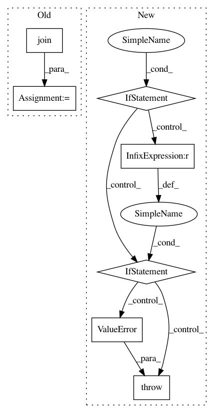

1f65deb60665a460edf5e9238a70a2c597b3a12c,tensorflow_datasets/core/load.py,,find_builder_dir,#,332
Before Change
// If has config (explicitly given or default config), append it to the path
if config_name:
builder_dir = os.path.join(builder_dir, config_name)
// Extract the version
version_str = _get_version_str(builder_dir, requested_version=version_str)
if not version_str: // Version not given or found
return None
After Change
)
if builder_dir:
all_builder_dirs.append(builder_dir)
if not all_builder_dirs:
return None
elif len(all_builder_dirs) != 1:
// Rather than raising error every time, we could potentially be smarter
// and load the most recent version across all files, but should be
// carefull when partial version is requested ("my_dataset:3.*.*").
// Could add some `MultiDataDirManager` API:
// ```
// manager = MultiDataDirManager(given_data_dir=data_dir)
// with manager.merge_data_dirs() as virtual_data_dir:
// virtual_builder_dir = _find_builder_dir(name, data_dir=virtual_data_dir)
// builder_dir = manager.resolve(virtual_builder_dir)
// ```
raise ValueError(
f"Dataset {name} detected in multiple locations: {all_builder_dirs}. "
"Please resolve the ambiguity by explicitly setting `data_dir=`."
)
else:
return next(iter(all_builder_dirs)) // List has a single element
def _find_builder_dir_single_dir(
name: str,
*,
data_dir: str,
In pattern: SUPERPATTERN
Frequency: 3
Non-data size: 7
Instances
Project Name: tensorflow/datasets
Commit Name: 1f65deb60665a460edf5e9238a70a2c597b3a12c
Time: 2020-09-24
Author: epot@google.com
File Name: tensorflow_datasets/core/load.py
Class Name:
Method Name: find_builder_dir
Project Name: deepchem/deepchem
Commit Name: f440639b2f1976731cfb388c8db45f5761cbe0eb
Time: 2016-01-08
Author: bharath.ramsundar@gmail.com
File Name: deepchem/utils/dataset.py
Class Name: FeaturizedSamples
Method Name: __init__
Project Name: fizyr/keras-retinanet
Commit Name: b097c96ce2db1b57b772290b67af61d1c942c13e
Time: 2018-01-15
Author: maarten@de-vri.es
File Name: keras_retinanet/preprocessing/coco.py
Class Name: CocoGenerator
Method Name: __init__